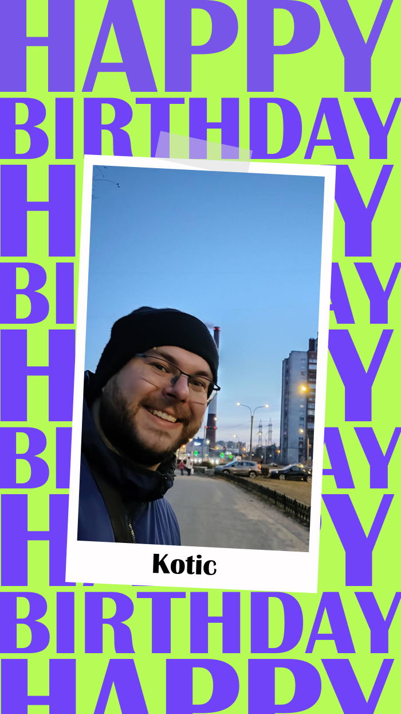

Котик, поздравляю тебя с Днём рождения!
Ты — самое дорогое, что у меня есть, моя любимая любимка. С тобой каждый день наполнен теплом, заботой и счастьем. Спасибо тебе за твою любовь, поддержку и за то, что ты всегда рядом. Ты делаешь мою жизнь ярче, как солнышко!
Желаю тебе здоровья, бесконечного счастья, исполнения всех желаний и ещё больше наших общих радостных моментов! Пусть каждый твой день будет наполнен улыбками, успехом и любовью, мур!
Давно хотела тебе сказать, что ты котик днем